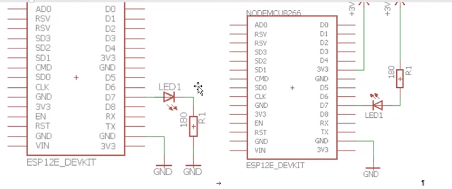
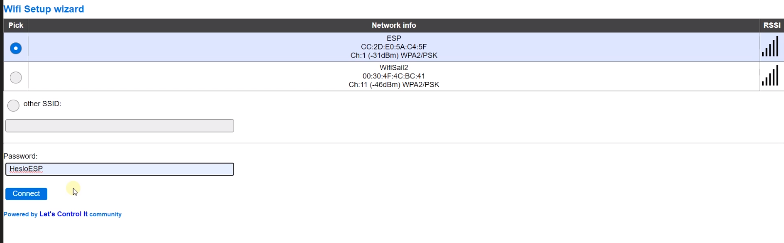

String html_2 = "
Priklad ovladani spotrebice.
";String html_6 = "
Ovladani zarovky
";String html_7 = "
";
String html_8 = "
";
String html_9 = "
Tyto příkazy platí pro Ubuntu a asi Debian. No Gentoo here.
cd [název složky] - přesune uživatele do určité složky
cd .. - přesune uživatele o složku zpět
dir - zobrazí složky
(sudo) nano [jméno souboru.přípona] - otevře textový editor
(sudo) vim [jméno souboru.přípona] - otevře jiný textový editor]
(sudo) mkdir [název] - vytvoří složku
(sudo) touch [název(.přípona)] - vytvoří složku
(sudo) rmdir [název] - smaže složku
(sudo) rm [název(.přípona)] - smaže soubor
(sudo) mv [adresa souboru/složky] [cílová adresa] - přesune soubor
cp [adresa souboru/složky] [cílová složka] - zkopíruje složku
sudo apt install [jméno programu] - instaluje program
sudo apt remove [jméno programu] - maže program
apt search [jméno programu] - hledá programy v repozitáři
Lze aplikovat i na několik programů najednou:
sudo apt install [jméno 1] [jméno 2] [jméno 3]
Midnight Commander - terminálový grafický prohlíeč souborů a složek
sudo apt install mc
Apache server
sudo apt install apache2
PHP
sudo apt install php libapache2-mod-php
Python
sudo apt install python2
sudo apt install python3
sudo nano /etc/netplan/01-netcfg.yaml - Zde lze nastavit IP adresy etc.
network:
version: 2
renderer: networkd
ethernets:
ens3:
dhcp4: no
addresses:
- 192.168.121.221/24
gateway4: 192.168.121.1
nameservers:
addresses: [8.8.8.8, 1.1.1.1]
Poznámka: Toto se nekopíruje, je to citlivé na pozice jednotlivých charakterů. Prostě to přepišt!
Poznámka 2: Tento plán nemusí fungovat na 100%, je to hodně individuální.
Poznámka 3: Pokud je editace souboru hotová, je potřeba spustit tento příkaz: sudo netplan apply
/home/ - Zde se nachází uživatelské účty (výjma root uživatele, ale se na Ubuntu řešit moc nemusí)
/var/www/ - Zde se nachází webové stránky, na které Apache server vidí
Po instalaci a spuštění Apache se může stát, že se úplně nebudou mít rádi s firewallem
Pro vyřešení tohoto problému je potřeba zadat několik příkazů
1. sudo ufw app list - Vypíše seznat dostupných programů, které komunikují s firewallem
V nabídce by se mělo nacházet Apache, Apache Full a Apache Secure
2. sudo ufw allow 'Apache Full' - Povolí Apache server na všechny porty
3. PROFIT
Pokud to nebude fungovat, zkusil bych restartovat Apache příkazem sudo systemctl reload apache2 nebo sudo systemctl reload apache2
Uživatelé mohou mít nastavené různé práva přístupu k jednotlivým souborům, například se může jednat o jejich spustitelnost
Tyto práva se dají řešit přes příkazy, ale jednodušší je je řešit v Midnight Commanderu
1. Zapněte Midnight Commander -> (sudo) mc
2. Najeďte do adresáře kde se nachází vybraný soubor a klikněte na něj
3. Najeďte v menu na File a v něm na chmod
4. Změňte práva vlastníka a potvrďte
PROFIT
Nevím, všechno se dělá přes ten jejich Server Manager, takže tady jsou nějaké základní tutoriály.
Je to jako Linux, ale jsou tam Piny
#include
const char* ssid = "Tvé SSID";
const char* password="Tvé heslo k WiFi";
void setup() {
// put your setup code here, to run once:
Serial.begin(9600);
delay(1000);
Serial.println("Program 03Wifi_SeriovaLinka");
WiFi.begin(ssid, password);
Serial.print("Pripojuji se k "); Serial.print(ssid);
while (WiFi.status() != WL_CONNECTED) {
delay(1000);
Serial.print(".");
}
Serial.println("\n");
Serial.print("IP adresa: "); Serial.println(WiFi.localIP());
Serial.print("MAC adresa: "); Serial.println(WiFi.macAddress());
}
void loop() {
// put your main code here, to run repeatedly:
}
// Tento kod vyuziva zdrojove kody z odkazu:
// https://randomnerdtutorials.com/esp8266-web-server-with-arduino-ide/
// I. Globalni sekce
// Knihovna pro komunikaci s ESP8266 WiFi + obsahuje tcp server viz. class WiFiServer
#include
// Udaje k WiFi
const char* ssid = "Baron_Sitko24";
const char* password = "Alfini_283";
// Vytvoreni objektu tcp server, ktery nasloucha na portu 80
WiFiServer server(80);
// Retezce pro www stranku s formularem
String header = "HTTP/1.1 200 OK\r\nContent-Type: text/html\r\n\r\n";
String html_1 = "
String html_2 = "
String html_6 = "
String html_7 = "
String html_8 = "
String html_9 = "
// promenna pro cteni pozadavku na web server
String request = "";
// Zarovka je pripojena ke GPIO 13
int Pin_zarovky = 13;
// II. Setup sekce
void setup() {
// Inicializace serioveho portu - prenosova rychlost 115200 b/s
Serial.begin(9600);
delay(10);
// Pin_zarovky nastavime jako vystupni
pinMode(Pin_zarovky, OUTPUT);
digitalWrite(Pin_zarovky, 0); //
delay(2000); // cekej
digitalWrite(Pin_zarovky, 1); //
// Pripojeni k WiFi siti a zobrazeni stavu WiFi v seriovem monitoru
Serial.println();
Serial.print("Connecting to ");
Serial.println(ssid);
WiFi.begin(ssid, password);
while (WiFi.status() != WL_CONNECTED) {
delay(500);
Serial.print(".");
}
Serial.println("");
Serial.println("WiFi je pripojena");
// Spusteni tcp serveru
server.begin();
delay(5000);
Serial.println("Web server je spusten. Cekej nez ESP ziska IP adresu");
// Vypise IP addresu a MAC adresu
Serial.print("IP address:\t"); Serial.println(WiFi.localIP());
Serial.print("MAC adresa:\t"); Serial.println(WiFi.macAddress());
}
// III. Sekce nekonecne smycky
void loop() {
// Server nasloucha az se k nemu prihlasi nejaky klient. Typicky je to webovy browser
WiFiClient client = server.available();
if (!client) { return; }
// Cte prvni radek pozadavku (request)
request = client.readStringUntil('\r');
//
Serial.println(request);
// pokud se vrati
if ( request.indexOf("ZAROVKAON") > 0 ) { digitalWrite(Pin_zarovky, 1); }
else if ( request.indexOf("ZAROVKAOFF") > 0 ) { digitalWrite(Pin_zarovky, 0); }
client.flush();
client.print( header );
client.print( html_1 );
client.print( html_2 );
client.print( html_6 );
client.print( html_7 );
client.print( html_8 );
client.print( html_9 );
delay(5);
// client.stop();
// Serial.println("Client disconnected.");
}
int pin=13;
void setup() {
// Sem vložte programový kód, který se má provést pouze jednou
// nastavíme pin GPIO 13 (D7) jako výstupní.
pinMode(pin, OUTPUT);
}
void loop() {
// loop – sem vložíme kód, který se ve smyčce neustále opakuje
digitalWrite(pin, HIGH); // rozsvit LED (HIGH na pinu bude Ucc)
delay(1500); // wait for a milisecond
digitalWrite(pin, LOW); // zhasni LED (LOW na pinu bude 0V)
delay(1000); // wait for a milisecond
}
Zapisuje se to do seriálového monitoru ON/OFF
int pin=13;
void setup() {
// Sem vložte programový kód, který se má provést pouze jednou
// nastavíme pin GPIO 13 (D7) jako výstupní.
pinMode(pin, OUTPUT);
// Inicializace seriove linky
Serial.begin(9600);
delay(2000);
Serial.println("Program Blik02");
}
void loop() {
// loop – sem vložíme kód, který se ve smyčce neustále opakuje
digitalWrite(pin, HIGH); // rozsvit LED (HIGH na pinu bude Ucc)
Serial.println("LED ON");
delay(1500); // cekej 500 ms
digitalWrite(pin, LOW); // zhasni LED (LOW na pinu bude 0V)
Serial.println("LED OFF");
delay(1000); // cekej 500 ms
}
Platí pro BLIK i BLIK2
int pin=13;
void setup() {
// Sem vložte programový kód, který se má provést pouze jednou
// nastavíme pin GPIO 13 (D7) jako výstupní.
pinMode(pin, OUTPUT);
// Inicializace seriove linky
Serial.begin(9600);
delay(2000);
Serial.println("Program Blik02");
}
void loop() {
// loop – sem vložíme kód, který se ve smyčce neustále opakuje
digitalWrite(pin, HIGH); // rozsvit LED (HIGH na pinu bude Ucc)
Serial.println("LED ON");
delay(1500); // cekej 500 ms
digitalWrite(pin, LOW); // zhasni LED (LOW na pinu bude 0V)
Serial.println("LED OFF");
delay(1000); // cekej 500 ms
}
Odkaz na stažení: https://github.com/letscontrolit/ESPEasy/releases/tag/mega-20200608
Připojíme na náš COM
Firmware bude: ESP_Easy_mega_20200608_normal_ESP8266_4M1M.bin
Dále klikneme na flash ESP počkáme nějakou dobu a připojíme se na WiFi ESP_Easy
Do prohlížeče vypíšeme IP adresu kterou nám to dá
Následně klikneme na Tools, Advanced a do NTP zadáme: ntp.cesnet.cz
D2=SDA
D1=SCL
Opět se připojíme na svou IP adresu skrze ESP Easy Flasher
Klikneme na Hardware a tam zkontrolujeme zda jsme SDA/SCL připojili správně
Klikneme na Tools a vybereme I2C Scan: 0x27 = LCD, MCP, PCF
0x76 = BME, BMP, MS, HT
Dále klikneme na Divices a ADD new device a zvolíme Environment- BMx280 pojmenujeme BMP odfajfkujeme Enabled, I2C address by mělo být 0x76, interval = 5sec., a klikneme submit
Dále opět přidáme zařízení , ale tentokrát Display – LCD2004, pojmenujeme LCD fajfka Enabled, I2C address 0x27, display site 2x16,
Line 1: t=[BMP#Temperature]{D}C toto je pro teplotu
Line 2: p=[BMP#Pressure] hPA toto je pro tlakoměr, interval buse opět 5 sekund